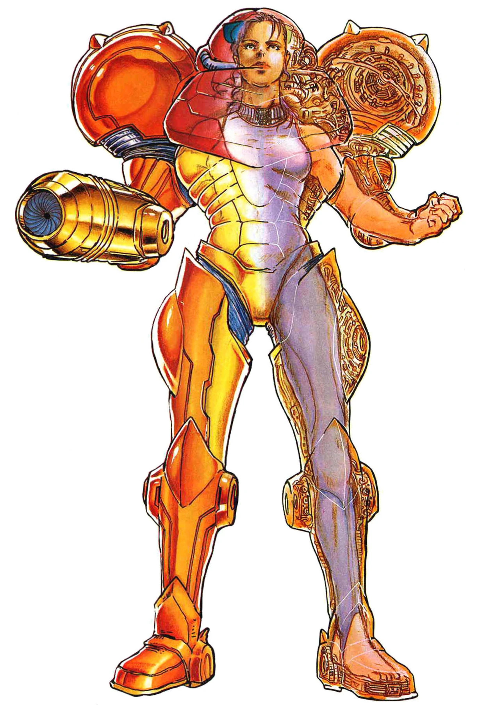

 The main protagonist of the Metroid series, Samus Aran.
Samus is an intergalactic bounty hunter, going on whatever missions come her way in order to protect the galaxy. Samus is a human enhanced with Chozo DNA (coming from both the Thoha and Mawkin tribes), as well as having Metroid DNA as a result of the events of Metroid Fusion. Samus was born on a planet named K-2L, and was raised by her two parents until her colony was suddently attacked by Ridley and the Space Pirates, killing her parents. She was rescued by the Chozo, and raised amongst them on their home planet, Zebes. They trained Samus, infusing her with some of their DNA to make her stronger, as well as giving her the iconic power suit. Once she becomes an adult, she parts from the chozo, and becomes a bounty hunter.
Samus is a woman of few words, being a mostly silent protagonist aside from a handful of times. She is always determined, strong, and unwaveringly confident. However, she also has a lot of emotion deep inside her, as she has a lot of care and compassion for the Chozo, her former Galactic Federation mentor, Adam Malkovich, and anyone she may find on her adventures, such as the Luminoth. She is willing to do anything so long as it helps protect the galaxy. Samus has an immense legacy not only to the galaxy of her universe, but also in ours, since she was one of the first playable female video game characters ever, and helping define a genre of gaming that has been enjoyed for decades.
One of the most iconic parts of Samus are her numerous armors that she collects during her adventure. Here is a list of them all: